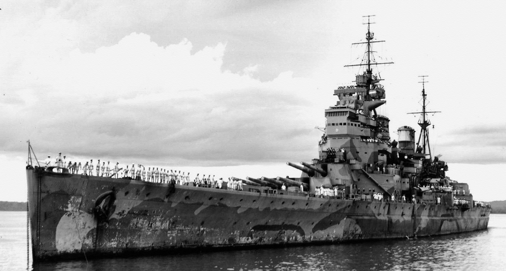
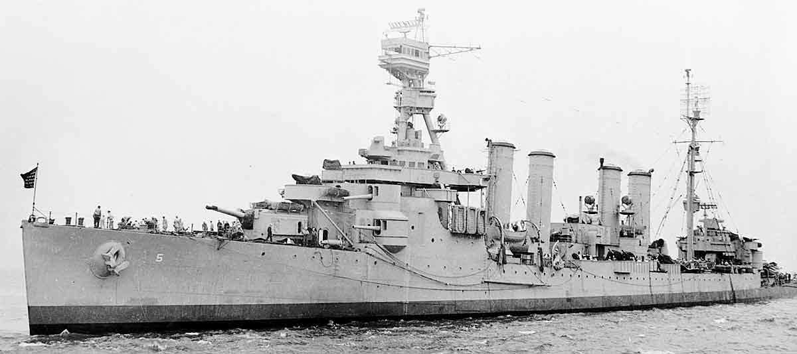
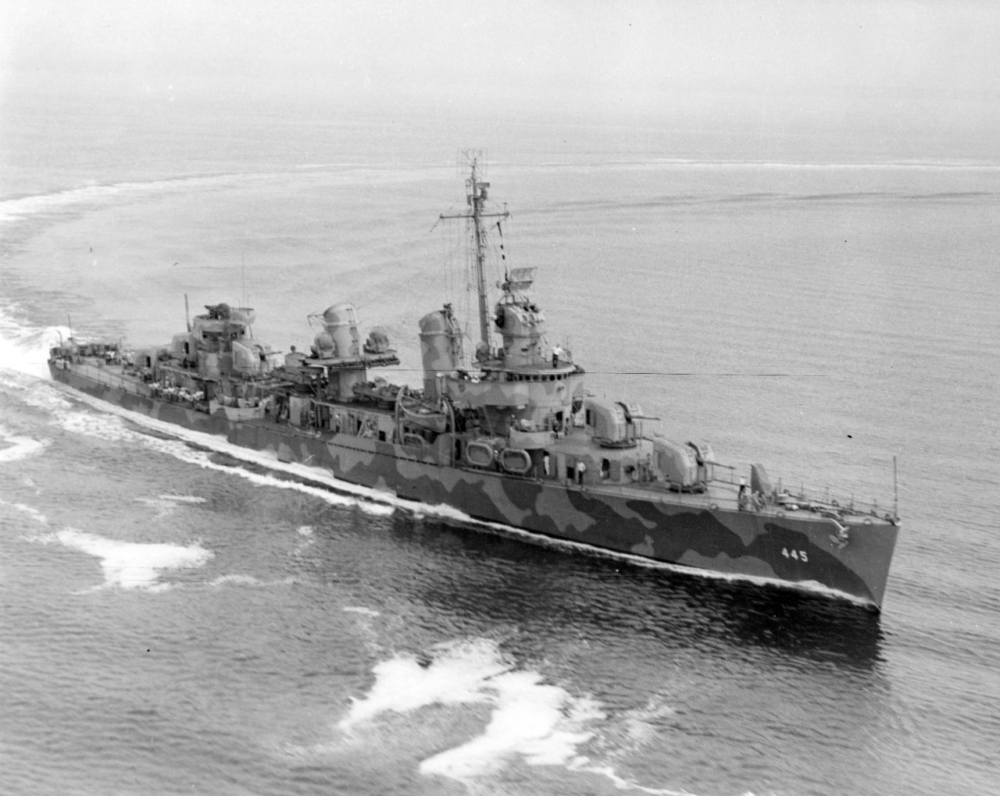
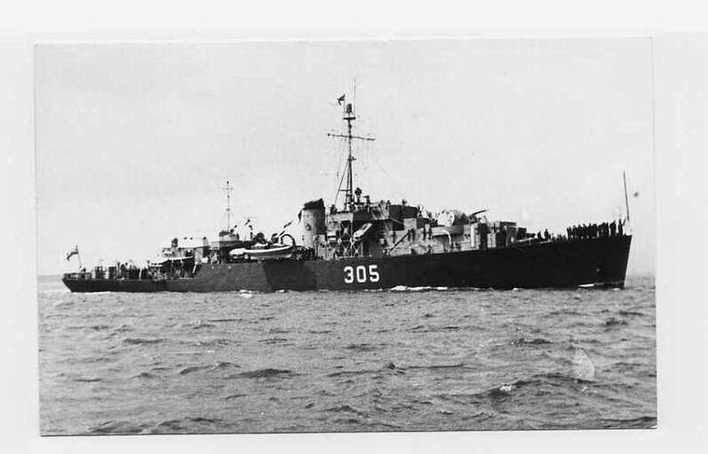

This is my webpage about warships
A warship or combatant ship is a naval ship that is used for naval warfare. Usually they belong to the navy branch of the armed forces of a nation,though they have also been operated by individuals, cooperatives and corporations. As well as being armed, warships are designed to withstand damage and are typically faster and more maneuverable than merchant ships. Unlike a merchant ship, which carries cargo, a warship typically carries only weapons, ammunition and supplies for its crew.
The employment of guns afloat, bringing a slow but progressive revolution in warship construction and naval tactics, had its first small beginnings by the 14th century. The first guns used at sea, undoubtedly hand weapons, were probably in Mediterranean galleys in the 13th or early 14th century. Such weapons played a minor role. In fact, in the numerous sea battles of the Greeks, Genoese, Moors, Turks, and Venetians during this period there is no mention of guns. But by the middle of the 14th century, the English, French, Spanish, and other navies mounted guns. Most were relatively small swivel pieces or breech-loading deck guns located in the castles fore and aft, but heavier guns were added later. The Mediterranean galleys of Venice, Turkey, and Spain at first simply mounted a heavy gun rigidly in a timber bed that was fixed to fire the gun forward over the bow. By the late 15th century these rigid mounts gave way to sliding mounts for the main centreline bow gun, as the pieces were called. Though some of these pieces were quite large, the light structure of a galley meant that there was only one large gun per vessel.
The frequent hard-fought sea battles of the 17th century, particularly in the Anglo-Dutch wars, led to the column formation of heavy warships called line ahead. In the line formation, each warship followed in the wake of the ship ahead so that every ship in the line had a clear field of fire for a broadside discharge of its guns. The adoption of line-ahead tactics made it necessary to standardize the battle line, which had consisted of ships of widely varying strength. Now only the more powerful warships were considered suitable “to lie in the line of battle.” Hence the origin by the 1700s of the term line-of-battle ship, or the ship of the line, and, in the second half of the 19th century, the derived term battleship—ships that could hit the hardest and endure the most punishment.
| Battleship | Cruiser | Destroyer | Frigate |
|---|---|---|---|
|  |  |  |  |